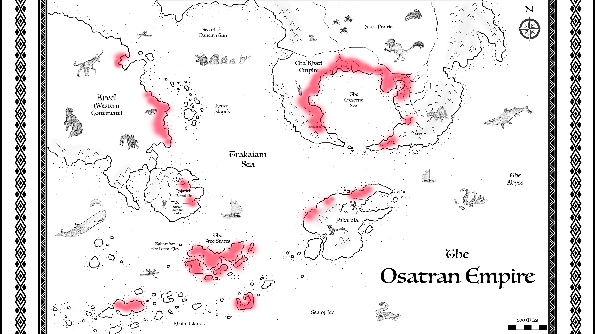
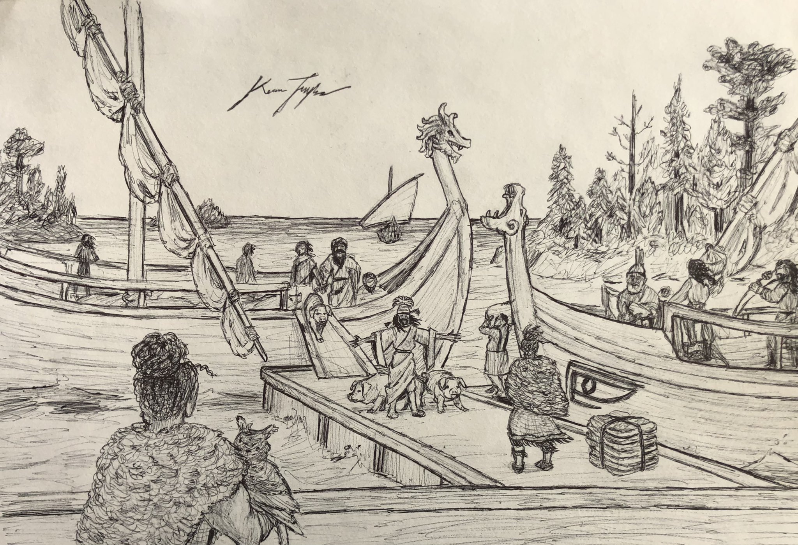
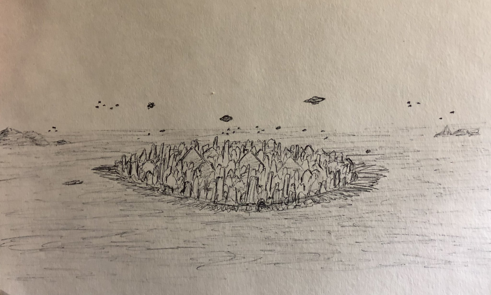
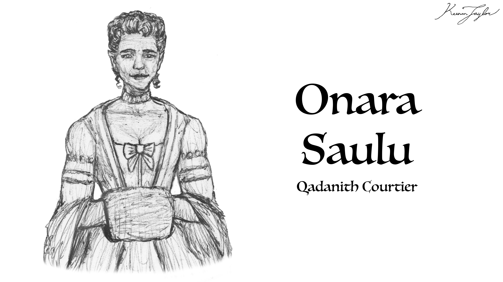
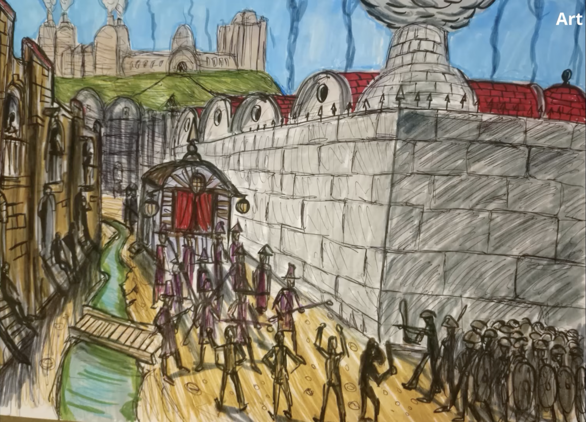

01 · INTRODUCTION
Overview

Osatra is one of the oldest continuously inhabited cities in the Known World and the political heart of the Free-States of Qadan. Situated along a sheltered gulf on the southern coast of Qadan, the largest island of the Qadanith Archipelago, it occupies a position well suited to maritime trade, agriculture, and political administration. Its history extends back to the earliest periods of organized Kaimeran settlement in the region, and its modern influence rests upon institutions developed over thousands of years.
The city is the headquarters of the Free-States, a maritime confederation composed of twenty-eight partially self-governing states, known as Kaibah. Their oligarchs convene in Osatra as a senate to legislate, regulate trade, negotiate with foreign powers, and address matters affecting the archipelago as a whole. Executive authority rests with three leaders known collectively as the Triarchy. Although certain families possess disproportionate influence in elections, Osatra has no formally hereditary ruling dynasty.
Osatra's power differs from that of the great territorial empires. Rather than relying primarily on conquest or the permanent occupation of foreign lands, the city exerts its influence through shipping, manufacturing, finance, diplomacy, and commercial relationships. Its merchant fleets connect otherwise distant societies, while its workshops and processing industries supply goods used throughout the Known World. This has made Osatra indispensable to the economies of both major powers and smaller communities.
The city is also notable for its unusually consistent architecture, its long record of political continuity, and its survival through periods of imperial collapse and regional instability. In the modern era, Osatra stands at the height of its prosperity. Its influence is extensive, although the political stability upon which its wealth depends may also discourage changes that threaten the interests of its ruling families.
02 · THE Qadanith Archipelago
Geography and Environment
Osatra lies within a long gulf on the southern coast of Qadan. The surrounding coastline provides sheltered waters suitable for harbors, while the gulf's geography offers protection from some of the severe weather affecting other parts of the archipelago. Rugged terrain to the north disrupts storms moving across the inland sea, making the southern coast comparatively secure.
The surrounding region experiences a Mediterranean climate, characterized by dependable seasonal rainfall and a long growing season. Its fertile soils support grain cultivation, orchards, livestock pasture, and numerous other agricultural activities. These resources have sustained a large population for millennia and helped make Osatra a reliable center for provisioning ships and supporting long-distance commerce.
The wider Known World is comparatively favorable for settlement by the standards of Kaimere. Its calmer seaways, cultivated soils, and relatively secure environments contrast with the dangerous frontiers and more difficult climates of many regions beyond it. These advantages are particularly important to Kaimerans, whose hereditary magic is associated with exceptionally long lives and elevated caloric requirements. Productive agriculture and dependable food supplies are therefore fundamental to the prosperity of Osatra and the Free-States.
The island's long history of occupation has also profoundly altered its ecology. Many dangerous large animals have been hunted to extinction across heavily settled portions of Qadan. Livestock, cultivated land, managed woodland, and secondary forests now dominate much of the landscape. The result is a cultural ecosystem in which human activity and ecological processes have been intertwined for thousands of years.
03 · THE REIGN OF THE FIRST CHILDREN
Early History
Osatra is among the oldest major Kaimeran settlements in the Known World. It was already an established center when the First Children arrived in the region. Its location combined fertile agricultural land, access to maritime routes, defensible terrain, and reliable seasonal rainfall. These advantages allowed the settlement to persist while other communities rose and disappeared.
The long occupation of the surrounding island gradually reduced the threat posed by many large predators and other dangerous animals. As the region became increasingly suited to farming and livestock husbandry, Osatra developed a stable agricultural base. Its sheltered harbor and access to food surpluses supported trade with neighboring islands and, eventually, distant parts of the Known World.
Unlike many cities whose importance depended upon the fortunes of a single dynasty, Osatra retained its population and commercial value through successive political changes. Its enduring settlement, defensible position, and economic connections helped establish the continuity that would later distinguish it from cities repeatedly destroyed or rebuilt following conquest.
04 · THE AGE OF EXCHANGE
The Osatran Empire and the Mercantile Age

Approximately three thousand five hundred years ago, Osatra was the capital of the Osatran Empire, a maritime power whose territories and commercial networks extended across much of the Known World. At its height, the empire held territories in Qajar, eastern Arvel, much of the Crescent Sea region, and northern Pakardia. Its influence rested upon a combination of naval power, overseas possessions, shipping, and the ability to connect distant markets.

This period is commonly called the Mercantile Age. Osatran merchants and administrators linked numerous regions through an extensive network of trade routes. Goods, people, technologies, and cultural practices moved between islands and continents, creating a degree of economic integration that had not previously existed on such a scale.
One of the empire's most consequential possessions was Kabarahar, the territory containing the Great Portal. At that time, the Portal was not merely a gateway. It was an autonomous swarm of native microbial life capable of harvesting organisms and other materials from Earth and replicating them on Kaimere. Through this process, organisms from Earth were introduced into Kaimere's ecosystems, where their descendants evolved independently.
The Osatrans used their control of Kabarahar to travel between Kaimere and Earth during a period corresponding approximately to the Bronze Age in the Mediterranean and the Formative Period in the Americas. This contact brought new technologies, livestock, and enslaved human populations into Osatran territory. Pigs and other transported animals also carried infectious diseases that spread along the empire's trade routes.
The most consequential of these outbreaks was the Barren Plague. The disease was highly destructive and left many surviving Kaimeran women with greatly reduced chances of carrying a pregnancy to term. Births fell dramatically during the following decade, creating a demographic crisis with lasting social and political consequences.
The plague weakened an empire already facing unrest. Rebellions among enslaved people, abolitionist movements, and revolutions in overseas territories undermined Osatran authority. Around three thousand years ago, the empire collapsed. Its territories fragmented, and much of the Known World entered a period commonly known as the Second Dark Age.
05 · CENTER OF POWER
Kabarahar and the Whistling Door

The Portal remains one of the most consequential features of Osatra's wider political and commercial world. Once a free and autonomous organism, it was eventually confined within a monumental artificial structure. No longer able to harvest and replicate organisms according to its own purposes, it is now restricted to receiving a target and reproducing it on the opposite side.

This apparatus is commonly called the Shrieking Door or the Whistling Door. The names refer to the eerie sounds produced as the Portal's magic moves through the air to envelop a target or assemble its replica. The structure stands on an artificial island in Kabarahar and functions as a gateway through which people can travel between Kaimere and Earth.

The Assembly, whose members travel between the planets, operates from a restricted district in Kabarahar and from leased territory on the nearby natural island of Roostercrest. Its settlements and facilities are subject to travel restrictions, passports, and the permission of local authorities. The Assembly's presence is therefore significant but not sovereign.

Roostercrest lies within the territory of Salutrakaibah, one of the twenty-eight states of the Free-States of Qadan. The Assembly relies upon contacts within House Saulu, the oligarchic family that dominates Salutrakaibah, when conducting activities outside its designated districts. Even within its leased territories, the Assembly must answer to Kaimeran authorities.

Kabarahar itself is treated differently. Although geographically surrounded by territory associated with House Saulu, it does not fall under that family's direct jurisdiction. The Free-State oligarchs consider the Portal too important to allow any single house to control it. Instead, Kabarahar is administered as part of the Kaienosatran territories governed from Osatra.
This arrangement makes Osatra important to interplanetary relations as well as regional trade. Its political institutions help determine how access to Kabarahar is managed, while the balance of power among the Free-States prevents the Portal from becoming the exclusive possession of a single oligarchic family.
06 · THE CREATION OF THE FREE-STATES
From Imperial Collapse to the Free-States
The collapse of the Osatran Empire did not destroy Osatra itself. Although the Second Dark Age disrupted trade and weakened many political institutions across the Known World, the city remained continuously inhabited and retained a surprising degree of prosperity. Its agricultural hinterland and sheltered harbor continued to provide a foundation for local commerce.
During the 1200s, lords and oligarchs from across the Qadanith Archipelago gathered in Osatra to establish the Free-States as a united political coalition. They created a constitution and a system of government that, despite later changes, remains substantially intact. The city became the shared political center of the archipelago's partially self-governing states.
The renewed trade connections established through this gathering are generally associated with the beginning of the Consolidation Era. Regions that had previously consisted of independent tribes, local rulers, or fragmented provinces increasingly formed larger political entities. Among the states that emerged or consolidated during this period were the Qajarith Republic, the Cha'Khati Empire, and the Pakardiant Confederacy.
Many Khalin peoples also developed looser political coalitions in response to the growing influence of the Free-States. Trade and the wealth it generated helped sustain these new political arrangements. Osatra did not simply recover from the fall of its empire; it helped establish the commercial conditions under which the modern political map of the Known World developed.
07 · THE Kaibah
Government and Political Institutions
The Free-States are a confederation of twenty-eight Kaibah, each retaining a measure of internal autonomy. Osatra and the surrounding Kaienosatran territories occupy a special position within this system. As the capital and principal seat of the senate, Osatra serves as neutral ground where the interests of individual states can be negotiated without placing the institutions of the confederation entirely within the control of one member.
The senate brings together the oligarchs of the constituent states to discuss domestic and foreign affairs, pass legislation, facilitate commerce, and coordinate policy. Executive authority is exercised by three Triarchs, selected through the political system rather than inherited through a formal royal line. In practice, several influential families are repeatedly elected to these positions.
This government reflects the central contradiction of Qadanith political life. The Free-States are united by common commercial interests, yet each state and its leading families seek to preserve their autonomy and influence. Osatra's neutrality is consequently important: it allows the oligarchs to cooperate while limiting the ability of any one family to dominate the whole system.
The arrangement is particularly important in Kabarahar. Because the Great Portal has strategic value far beyond any one state, its administration cannot safely be entrusted to a single house. By placing it within the wider Kaienosatran framework, the Free-States seek to maintain collective oversight of an asset that could otherwise transform the balance of power within Qadan.
08 · THE CENTER OF INDUSTRY
Population and Industry

Modern Osatra is one of the most populous cities in the Known World. Its census records nearly one million citizens within the urban and suburban districts, with approximately another million people living in the surrounding countryside and coastal fishing settlements. The broader metropolitan population supports a large labor force, extensive markets, and a dense network of agricultural and commercial settlements.
Osatra is also one of the principal industrial centers of Kaimere. Its factories and workshops process local produce and imported raw materials, including grain, textiles, metal, oil, and lumber. These materials are converted into products such as beams, cloth, flour, nails, refined oil, and containers used to store and preserve goods over long periods.
The city's industries include mills, distilleries, refineries, and numerous smaller manufacturing operations. These establishments do not constitute a full industrial revolution by the standards of modern Earth. Nevertheless, they provide a level of production and commercial specialization that few other places in Kaimere can match. Osatran goods are generally inexpensive and widely distributed, making the city a supplier of everyday necessities throughout the Known World.
This industrial concentration depends in part upon the demographic circumstances of Kaimeran society. Kaimerans live for centuries and have high caloric requirements, while their slow growth and reproduction limit the rate at which their populations can expand. The large population of freedmen and other human residents in Osatra provides a substantial labor pool for manufacturing and commercial activity.
Slavery is now prohibited in Osatra and most of the Free-States. However, human migrants from Earth who reside in the capital continue to face severe inequality. Many are classified as noncitizens, receive poor wages, and are segregated into labor camps. The city's prosperity therefore coexists with a deeply unequal social order, in which legal abolition has not produced equal political or economic standing.
Osatra's importance is felt far beyond its own borders. Many smaller cities depend on Osatran ships for staple commodities and supplement their local production with imported flour, cloth, processed materials, and other necessities. The city is consequently not just a manufacturing center but a major point of distribution through which the economies of the Known World remain connected.
09 · THE SIGN OF ELEGANCE
Architecture and Urban Form

Osatra's architecture reflects its exceptional continuity. The city has never been conquered, and its built environment has developed without the repeated wholesale destruction that reshaped many other capitals. Older architectural principles remain visible throughout its streets, public buildings, and residential districts.
Most of the city is organized around a highly geometric aesthetic. Roads frequently follow cardinal directions, and buildings favor clear geometric forms, consistent proportions, and carefully arranged facades. This uniformity is deliberate. Osatran architecture communicates stability, order, and the idea that the city's institutions are older and more enduring than the fortunes of individual rulers.
Newer buildings sometimes experiment with different forms, but the prevailing architectural character remains conservative. Assembly observers from Earth have compared the visual philosophy of Osatran architecture to the Art Deco movement of early twentieth-century Europe. The comparison concerns their shared emphasis on geometry, symmetry, and visual grandeur rather than an equivalence in construction materials or technological development.
Unlike Godan, whose architecture records repeated conquest and successive dynasties, Osatra presents itself as a city that has remained fundamentally unchanged. Its streets and buildings are part of its political identity: a visible statement that continuity is a source of strength.
10 · MARITAL POWER
Military Power and Foreign Relations
Osatra maintains a standing army and navy, but its military establishment is modest in comparison with those of the great territorial powers. Its armed forces are primarily intended to defend the city, protect its waters, and preserve the security of its commercial network. Much of its naval strength is dedicated to escorting merchant fleets rather than seeking conquest.
This strategy reflects the city's dependence on international stability. Osatra benefits when ships can travel safely, markets remain open, and rival states continue to trade. Large-scale war threatens not only its merchants but also the supply networks that sustain its population and industries.
The city's diplomatic influence was especially evident following the Three Spears, a war in the 1600s involving the Qajarith Republic, the Cha'Khati Empire, and Pakardia. Osatra helped broker the peace, and the terms of the Teshoko Treaty remain in effect. Its role as a mediator demonstrates how commercial power can be converted into diplomatic authority without requiring direct territorial control over the parties involved.
The Free-States continue to benefit from their reputation as a commercial power, but their position depends on maintaining access to maritime routes and preserving relationships with neighboring states. Osatra's military policy is therefore closely tied to its economic interests: defend the network, avoid unnecessary conquest, and keep trade moving.
11 · Present Position
Osatra in the Modern Era
Osatra is currently at the height of its prosperity, with commercial influence that exceeds even that of its former imperial period. The old empire controlled territories directly, but the modern city exercises power through the trade relationships that bind together states large and small. Its ships, factories, merchants, and political institutions give it an economic reach that extends throughout the Known World.
This success has also made Osatra a defender of the existing political order. Its oligarchs, like the ruling families of other Kaimeran states, benefit from the current distribution of wealth and authority. Although rival powers continue to compete and prepare for possible conflict, commercial interdependence creates powerful incentives to preserve peace.
Some observers believe that the relative technological stagnation following the period of innovation associated with the Consolidation Era reflects the interests of the established ruling families. New technologies and new systems of production could alter existing balances of power, undermine traditional privileges, or create competitors beyond the oligarchs' control. The same stability that has allowed Osatra to prosper may therefore discourage changes that could transform the wider world.
Others within the city recognize a potential weakness in this strategy. A state whose influence rests so heavily on trade may be vulnerable if war disrupts its shipping routes or isolates its markets. Yet such concerns remain secondary to the prevailing confidence that the current system can endure.
Osatra's strength lies in peace, prosperity, and continuity. Its rulers have little incentive to overturn an arrangement that fills their coffers and keeps their merchant fleets sailing. For now, the city's political and commercial elite continue to favor a stable Known World in which their influence remains secure.